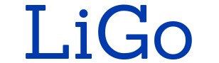

<table>
    <tr>
        <td>
            
        </td>
        <td>
            LiGo ist ein Selbstlernkurs zu literaturwissenschaftlichen Grundbegriffen.<br/>
            Lassen Sie sich neue Begriffe erklären und an Beispielen demonstrieren.<br/>
            Überprüfen Sie Ihr gesammeltes Wissen mit Hilfe der interaktiven Übungen.<br/>
        </td>
    </tr>
    <tr>
        <td></td>
        <td>
            <br/>
            <a href="{{'_pages/hauptauswahl/wissensbereiche.html' | relative_url}}" class="button-m">Wissensbereiche</a>
            <a href="{{'_pages/hauptauswahl/verzeichnisse.html' | relative_url}}" class="button-m">Verzeichnisse</a>
        </td>
    </tr>
    <tr>
        <td></td>
        <td>
            <a href="{{'_pages/hauptauswahl/ueber_ligo.html' | relative_url}}" class="button-m">Über LiGo</a>
            <a href="{{'_pages/hauptauswahl/uebungen.html' | relative_url}}" class="button-m">Übungen</a>
        </td>
    </tr>
</table>